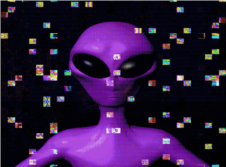
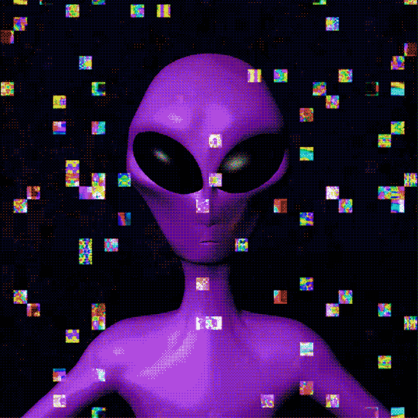
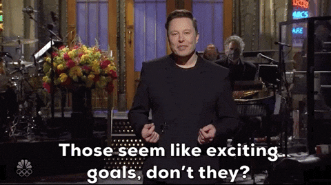
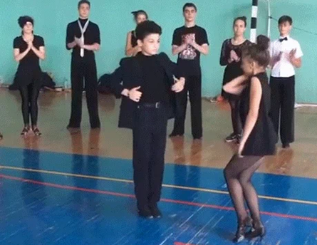
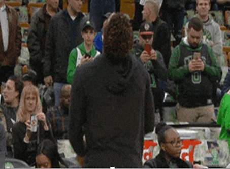
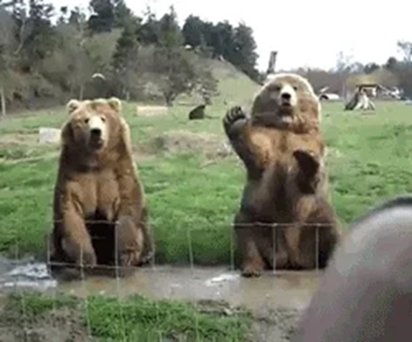
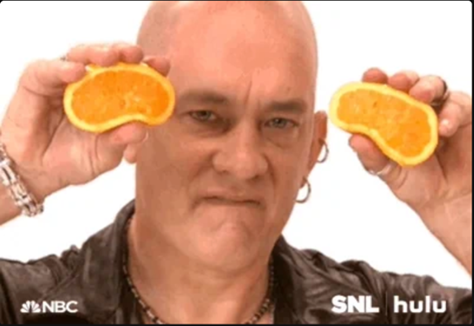

{kind=link}
{kind=link}








Compared to its static counterpart (e.g., R1C1), an animated GIF image (e.g., R1C2) could provide a more vivid and expressive representation of motion, temporal progression, and color transitions. Although both formats may convey similar visual concepts, animated GIFs are particularly effective at illustrating dynamic processes and continuous actions. By presenting a sequence of frames over time, GIFs are able to depict narrative progression and causal outcomes, such as the completion of a trick shot in R4C2 whereas static images (e.g., R4C1) capture only a single moment, often requiring viewers to infer unresolved or ambiguous outcomes.
Moreover, animated GIFs consistently convey richer information and evoke stronger emotional responses than their static counterparts. For instance, the aesthetic and dynamic appeal of R3C2 surpasses that of R3C1, while the humorous interaction in R5C2 (two teddy bears waving) is much more engaging than their static snapshot R5C1. This illustrates the unique communicative power of animated GIFs in evoking resonance and enhancing visual storytelling. In the case of emotional expression, the static image (e.g., R2C1) captures a single facial expression and verbal cue, which limits emotional interpretation to an isolated moment. By contrast, the animated GIF (e.g., R2C2) conveys subtle temporal variations in gesture, timing, facial expression and body language, which collectively amplify emotional nuance. This temporal layering allows viewers to perceive tone, intention, and affect more clearly, thereby fostering a stronger emotional connection than is possible through a single static frame.
| Static Images | Animated GIFs | |
|---|---|---|
| Vivid / Colorful |  |
 |
| Emotional Response |  |
|
| Storytelling / Dancing |  |
|
| Storytelling / Sports |  |
|
| Humor |  |
|
| Cause & Effect |  |